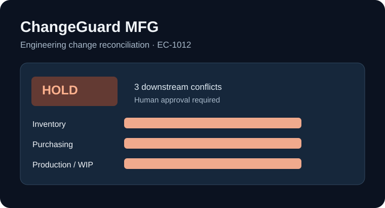

Agentic AI · Manufacturing systems
ChangeGuard MFG
How do you know a manufacturing engineering change is actually ready for release? ChangeGuard compares fictional BOM, inventory, purchasing, work-in-process, and quality evidence and proposes a READY/HOLD review. It includes agent contracts, a verifier, a synthetic evaluation set, and a human approval gate.